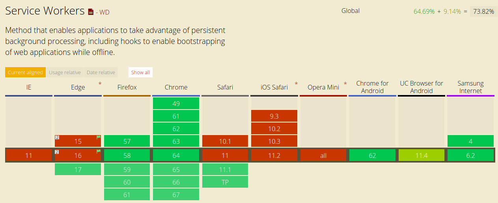

Service Worker
Service Worker 也称服务工作线程，是浏览器在后台独立网页运行的脚本，也算作是 JavaScript 工作线程。它无法直接访问 DOM，因此，如果你需要操作页面的 DOM 节点的话，可以通过 postMessage 来跟想控制的页面进行通信。 Service Worker 中的 API 大量采用 Promise 方式设计，因此代码比较友好。
在兼容性方面， Chrome Firefox Opera 都已经支持， Microsoft Edge 现在也表示公开支持。而之前 Safari 因为不计划支持被很多开发者吐槽，认为它将会是下一代 IE 。迫于压力下，现 Safari 也暗示未来会进行开发。
如果网站要使用 Service Worker ，传输协议必须为 HTTPS 。因为 Service Worker 中会涉及到请求拦截，所以必须使用 HTTPS 协议来保证安全。 另外，如果需要本地调试 Service Worker 的话， localhost 是被支持的。
概述
若想理解 Service Workers 相关的一切，你首先应该阅读一下之前发布的有关 Web Workers 的文章。
大体上，Service Worker 是一种 Web Worker，更准确地说，它更像是一个 Shared Worker。
- Service Worker 运行在其全局脚本上下文中
- 不指定和某个网页绑定
- 不能够访问 DOM
Service Worker 接口之所以让人感到兴奋的原因之一即它支持网络应用离线运行，这使得开发者能够完全控制网络应用的行为。
生命周期
Service Worker 的生命周期和网页完全不相关。它由以下几个步骤：
- 下载（Download）
- 安装（Install）
- 激活（Activate）
下载
这发生于浏览器下载包含 Service Worker 相关代码的 .js 文件。
安装
为了在网络应用中使用 Service Worker，首先得在 JavaScript 代码中对其进行注册。当 Service Worker 注册的时候，它会让浏览器在后台开始安装 Service Worker 的步骤。
当你的应用之前未注册过 Service Worker 的话，那么第一步将会是注册环节。
if ('serviceWorker' in navigator) {
window.addEventListener('load', function() {
navigator.serviceWorker
.register('/sw.js')
.then(registeration => {
// success
})
.catch(err => {
// error
});
});
}
请注意，以上 '/sw.js' 代表 Service Worker 作用域的范围为根域（也就是 Service Worker 脚本的位置），也就是说，即使你的页面在 '/example/a.html' 中也属于该 Service Worker 的控制范围。
Chrome 浏览器下，可以在 chrome://inspect /#service-workers 中，查看服务工作线程是否已经注册。如果调试的话，用隐身模式打开窗口会非常方便，因为从隐身窗口创建的任何注册和缓存在该窗口关闭后均将被清除。
除此之外，以上代码有几点需要注意：
- 需要进行特性检测，判断浏览器是否支持。
- 最好在页面所有资源都已经加载完毕后，这个时候去加载 Service Worker 是一个非常好的时间点。因为在移动端，页面打开首屏时间非常关键。
在安装阶段，最好加载和缓存一些静态资源。一旦静态资源缓存成功，Service Worker 的安装也就完成了。倘若加载失败－Service Worker 将会重试。一旦安装成功，静态资源也就缓存成功了。
假设用户第一次访问网络应用。现在还没有注册 Service Worker，而且浏览器无法事先知晓是否会最终安装它。如果进行安装，则浏览器将会为增加的线程开辟额外的 CPU 和内存，而这些资源原本是用来渲染网页的。
load 事件会加载完所有的资源比如图片，样式之后触发。
最终的结果即是如果在页面中安装 Service Worker，将有可能导致页面延迟加载和渲染－不能够让用户尽快地访问网页。
需要注意的是这只会发生在第一次访问页面的时候。后续的页面访问不会被 Service Worker 的安装所影响。一旦在首次访问页面的时候激活了 Service Worker ，它就可以处理后续的页面访问所触发的页面加载/缓存事件。这是正确的，Service Worker 需要加载好以处理有限的网络带宽。
激活
安装完之后下一步即激活。该步骤是操作之前缓存资源的绝佳时机。
一旦激活，Service Worker 就可以开始控制在其作用域内的所有页面。一个有趣的事实即：注册了 Service Worker 的页面直到再次加载的时候才会被 Service Worker 进行处理。当 Service Worker 开始进行控制，它有以下几种状态：
- 处理来自页面的网络或者消息请求所触发的 fetch 及 message 事件
- 中止以节约内存
以下即其生命周期：

处理 Service Worker 内部的安装过程
在受控页面运行注册 Service Worker 的过程中，让我们来看看 Service Worker 脚本中发生的事情，它监听 Service Worker 实例的 install 事件。
以下为处理 install 安装事件所需要执行的步骤：
- 打开缓存空间
- 缓存文件
- 确认是否所有的静态资源已缓存
const CACHE_NAME = 'my-web-app-cache';
const urlsToCache = ['/', '/styles/base.css', '/dist/bundle.js'];
self.addEventListener('install', event => {
// 开始缓存文件
// event.waitUntil使用promise来获得安装时长及安装是否失败
event.waitUntil(
caches.open(CACHE_NAME).then(function(cache) {
console.log('成功打开缓存空间');
return cache.addAll(urlsToCache);
})
);
});
请注意，这里面有个缓存空间的概念，也即 caches.open 里的参数。因为每个页面对应的缓存空间可能不相同，有了缓存空间后也能更好的对缓存进行控制。打开缓存空间后，之后再调用 cache.addAll() 并传入文件数组进行缓存。
上述中，所有的文件都成功缓存才算成功，如果有任何文件下载失败，那么安装步骤就会失败。所以如果缓存列表过长的话，将会增加缓存失败的几率。
如果 sw.js 一直都不变化的话，那么 install 安装事件只有在首次安装的时候才会调用。
处理 install 事件完全是可选，当不进行处理的时候，跳过以上几个步骤即可。
缓存运行时请求
该部分才是干货。在这里可以看到如何拦截请求然后返回已创建的缓存（以及创建新的缓存）。
当 Service Worker 安装完成之后，用户会导航到另一个页面或者刷新当前页面，Service Worker 将会触发 fetch 事件。这里有一个演示了如何返回缓存的静态资源或执行一个新的请求并缓存返回结果的过程的示例：
self.addEventListener('fetch', function(event) {
event.respondWith(
// 该方法查询请求然后返回Service Worker创建的任何缓存数据
caches.match(event.request).then(function(response) {
// 若有缓存,则返回
if (response) {
return response;
}
// 复制请求。请求是一个流且只能被使用一次。因为之前已经通过缓存使用过一次了，所以为了在浏览器中使用fetch,需要复制下该请求
const fetchRequest = event.request.clone();
// 没有找到缓存。所以我们需要执行fetch以发起请求并返回请求数据
return fetch(fetchRequest).then(function(response) {
// 检测返回数据是否有效
if (!response || response.status !== 200 || !response.type !== 'basic') {
return response;
}
// 复制返回数据,因为它也是流。因为我们想要浏览器和缓存一样使用返回数据,所以必须复制它。这样就有两个流
const responseToCache = response.clone();
caches.open(CACHE_NAME).then(function(cache) {
// 把请求添加到缓存中以备之后的查询用
cache.put(event.request, responseToCache);
});
return response;
});
})
);
});
上述是一个简单的例子：有缓存的话直接返回缓存文件，没缓存的话获取源文件并返回。如果做的好的话，可以在发现没缓存的时候，把它先缓存下来，再进行返回。
大概的流程如下：
event.respondWith()会决定如何响应fetch事件。caches.match()查询请求然后返回之前创建的缓存中的任意缓存数据并返回 promise。- 如果有，则返回该缓存数据。
- 否则，执行
fetch。 - 检查返回的状态码是否是
200。同时检查响应类型是否为 basic，即检查请求是否同域。当前场景不缓存第三方资源的请求。 - 把返回数据添加到缓存中。
因为请求和响应都是流而流数据只能被使用一次，所以必须进行复制。而且由于缓存和浏览器都需要使用它们，所以必须进行复制。
更新 Service Worker
当用户访问网络应用的时候，浏览器会在后台试图重新下载 Service Worker 文件。
浏览器一旦判断到新的服务工作线程文件与其当前所用文件存在字节差异，则将其视为“新服务工作线程”。接下来就会做以下事情：
- 新的服务工作线程启动，并触发
install安装事件。 - 此时，旧服务工作线程仍控制着当前页面，因此新服务工作线程将进入
waiting等待状态。 - 当网站上当前打开的页面关闭时，旧服务工作线程将会被终止，新服务工作线程将会取得控制权。
- 新服务工作线程取得控制权后，将会触发其
activate激活事件。
通常在 activate 激活事件中，我们会清除旧版本的缓存。
为什么所有这一切是必须的呢？这是为了避免在不同选项卡中同时运行不同版本的的网络应用所造成的问题，一些在网页中实际存在的问题且有可能会产生新的 BUG（比如当在浏览器中本地存储数据的时候却拥有不同的数据库结构）。
从缓存中删除数据
activate 回调中最为常见的步骤即缓存管理。因为若想删除安装步骤中老旧的缓存，而这又会导致 Service Workers 无法获取该缓存中的文件数据，所以，这时候需要进行缓存管理。
这里有一个示例演示如何把未在白名单中的缓存删除（该情况下，以 page-1 或者 page-2 来进行命名）：
self.addEventListener('activate', function(event) {
const cacheWhitelist = ['page-1', 'page-2'];
event.waitUntil(
// 获得缓存中所有键
caches.keys().then(function(cacheNames) {
return Promise.all(
// 遍历所有的缓存文件
cacheNames.map(function(cacheName) {
// 若缓存文件不在白名单中，删除之
if (cacheWhitelist.indexOf(cacheName) === -1) {
return caches.delete(cacheName);
}
})
);
})
);
});
注意事项
Cookie 设置
在 Service Worker 中使用 fetch 的时候，请求头中默认不包含 Cookie，如果要添加 Cookie 的话，需要增加 credentials 参数。
fetch(url, {
credentials: 'include',
});
HTTPS 要求
当处于开发阶段的时候，可以通过 localhost 来使用 Service Workers ，但当处于发布环境的时候，必须部署好 HTTPS（这也是使用 HTTPS 的最后一个原因了）。
可以利用 Service Worker 劫持网络连接和伪造响应数据。如果不使用 HTTPS，网络应用会容易遭受中间人 攻击。
为了保证安全，必须通过 HTTPS 在页面上注册 Service Workers，这样就可以保证浏览器接收到的 Service Worker 没有在传输过程中被篡改。
应用场景
以下罗列了几点当前以及将来 Service Worker 能做的事情：
- 拦截网络
- 离线缓存：可以将 H5 应用中不变化的资源或者很少变化的资源长久的存储在客户端，提升加载速度、降低流量消耗、降低服务器压力。如中重度的 H5 游戏、框架数据独立的 Web 资讯客户端、Web 邮件客户端等。
- 消息推送：激活沉睡的用户，推送即时信息、公告通告，激发更新等。如 Web 资讯客户端、Web 即时通讯工具、H5 游戏等运营产品。
- 事件同步：确保 Web 端产生的任务即使在用户关闭了 Web 页面也可以顺利完成。如 Web 邮件客户端、Web 即时通讯工具等。
- 定时同步（未来支持）：周期性的触发 Service Worker 脚本中的定时同步事件，可借助它提前刷新缓存内容。如 Web 资讯客户端。
- 地理围栏（未来支持）：地理围栏（Geo-fencing）是 LBS 的一种新应用，就是用一个虚拟的栅栏围出一个虚拟地理边界。当手机进入、离开某个特定地理区域，或在该区域内活动时，手机可以接收自动通知和警告。
浏览器支持情况
Service Workers 拥有良好的浏览器兼容性。
总结
除了离线缓存外，利用 Service Worker 还可以做很多令人兴奋的功能。比如：
- 客户端编译（把原来本地/服务端 Webpack 打包编译的事情放在
client中） - 预请求 Prefetch（SSR 框架 next.js 提供了 Link 组件来实现预请求渲染）
利用 Service Worker 能大大提升 Progress Web App（PWA） 的体验，现在各大厂商都表示支持，也代表了未来的趋势。另外， Google 提供了一套 Service Worker 库，可以消除服务工作线程样板文件代码，从而简化开发工作。
- sw-precache—与构建流程集成，以生成服务工作线程，用于预缓存静态资产，例如 Application Shell。
- sw-toolbox—实现常见运行时缓存模式，例如动态内容、API 调用以及第三方资源，实现方法就像编写 README 一样简单。
- sw-offline-google-analytics—临时保留并重试 Analytics 请求，以避免请求因网络断开连接而丢失。
参考文档：